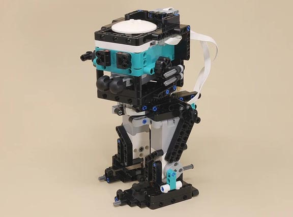

Scout Walker
You can control it with the remote control program, or try modifying the autonomous program to make your own autonomous action sequences.

Scout Walker | |
|---|---|
|  |
This walker is modelled after the AT-ST Walker from Star Wars. It walks on its two legs, the cab can rotate left and right, and it can shoot the two projectile darts from your Robot Inventor kit.
You can control it with the remote control program, or try modifying the autonomous program to make your own autonomous action sequences. |
|
|
The legs walk, and the cab can rotate left and right and shoot the two darts from the projectile launchers. |
Building Instructions |
|
|---|---|
 | 1 Legs for Scout Walker |
| 2 Dart Shooter for Scout Walker |
| 3 Scout Walker |
| 4 Finishing Touches for Scout Walker |
Programming |
|
|---|---|
 | Scout Walker Programming.zip |
 | 1 Scout Walker Auto.lms |
| 2 Scout Walker RC 1.lms |
| 3 Scout Walker RC.lms |
 |
Scout Walker Auto
Make sure you center the turntable using the knob on the motor so that the cab is facing straight forward before running any of the programs. Because of the range of motion in the geared turntable, the motor is not able to reliably center itself. This autonomous program defines some simple My Blocks to control basic actions, and then the main stack puts them together into an action sequence. You can easily modify this program to create your own sequences. |
 |
Scout Walker RC 1
This simplified remote control controls the basic actions of the walker in the simplest way, so you can see how they work. Be careful not to rotate the cab too far left and right, because it will pull on the wires. The more complete version of the program has code to prevent this. |
 |
Scout Walker RC
This complete remote control program allows to you to walk forward, backward, and also turn slowly, using the D-pad. The walking code includes logic to make the walker land flat on its feet when you stop, instead of leaning to either side. You can rotate the cab left and right using the gray buttons, and the code will keep it from rotating too far (make sure you center the turntable motor manually before starting). The red fire button will fire each of the two darts in sequence. |